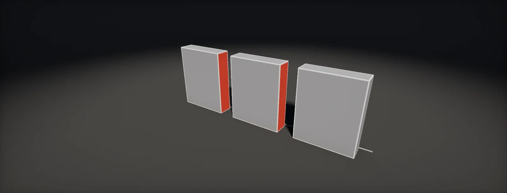

Mesh Optimization: Hidden Faces and Vertex Counts
What a mesh costs on the GPU, deleting faces nobody sees by hand and by visibility tests, putting vertices on the silhouette, modelling rules that save vertices, triangulation and thin triangles, and vertex cache order, built in Unity HDRP and Unreal.

What a mesh costs on the GPU
A mesh costs in four places. Memory: every GPU vertex stores its position, normal, tangent, UVs and colour. Vertex work: the vertex shader runs once per vertex that is not still in the vertex cache, in every pass that draws the mesh (main view, depth prepass, each shadow cascade). Triangle setup: every triangle is assembled, clipped and culled, even if it ends up facing away. Pixels: the triangles that survive are rasterised in 2 × 2 quads.
The vertex count the GPU sees is not the one the modelling tool shows. A closed mesh has roughly half as many positions as triangles, and every UV seam, hard edge and material border duplicates the vertices along it:
Which of the four limits a scene depends on the platform and the view. Dense meshes far away waste pixel work in partly covered quads (quads and tiny triangles); many mid-density meshes in shadow cascades make the vertex stage the bottleneck; a large open world runs out of memory first. The rest of this unit removes work in that order: faces that are never seen, vertices that do not change the outline, triangles that shade badly, and an index order that reshades the same vertices.
Removing faces by testing visibility
For large kits, background geometry and merged distant meshes, hidden faces are found automatically: place viewpoints where the camera can be, test every triangle from every viewpoint (by ray casts or by rendering triangle IDs), and keep each triangle that at least one viewpoint sees facing it. The method is conservative only if the viewpoints cover the space: a triangle visible from a small part of it can be missed by all samples:
- Simplygon does this in its reduction and aggregation pipelines: a camera selection set defines the viewpoints, and the Visibility settings enable back-face culling and occluded-geometry culling. When it also bakes materials, it gives the freed texture space to the triangles that remain.
- Unreal Engine has the Jacket tool in Modeling Mode (Mesh category), and the older jacketing in the level editor, which removes triangles that cannot be seen from any viewpoint outside the selected meshes, with a voxel precision and a maximum gap size.
- Your own tool is a short script in any package with ray casts: Unity (the build chapter has one), Blender's
BVHTree, Houdini's Ray SOP or the VEXintersect()function.
Visibility culling pays most where the camera is constrained: HLODs and distant LODs, which are only ever seen from far away, top-down and side-view games, racing tracks. For a free first-person camera, the hand-deleted bottoms and backs are usually most of the gain.
Vertices belong on the silhouette
Interpolated normals make a flat-faced cylinder look round in its interior; only its outline shows the corners. So the number of sides a round part needs is set by its size on screen: enough that the outline stays within a pixel or so of a true circle, at the closest distance the LOD is used:
The same reasoning applies to every curve: the side of a barrel can have 12 sides at the distance where a pipe of the same radius in the background needs 6. Detail inside the outline (panel lines, rivets, small bevels) goes into normal maps, trims or decals. Detail that changes the outline (a broken edge, a dent in the silhouette) is worth modelling. Size on screen comes from the same projection as LOD switching:
Modelling rules that save vertices
Most savings come from a few habits applied to every asset:
| Vertices pay off | Vertices are wasted |
|---|---|
| On the silhouette, where the outline changes direction | In flat interiors that a normal map or a tiling material can shade |
| Chamfers that catch a highlight with weighted normals | Support loops and subdivision-ready topology left in the game mesh |
| Where the mesh deforms: joints of skinned meshes, cloth, vertex animation | Edge loops that change neither silhouette, shading, UVs nor deformation |
| Evenly spaced vertices that carry vertex paint or vertex data (vertex colour masks) | Detail cut into a base surface where a separate, intersecting piece (a floater) would do |
| Faces the player sees | Faces under floors, against walls or inside other pieces |
| Triangles of roughly even size on screen | Long slivers that connect distant vertices across a flat face |
- Hard edges only on UV seams. Both split vertices, so a hard edge on a seam is free, and a hard edge elsewhere doubles the vertices along it. Where an edge must look sharp without a seam, a chamfer with weighted normals is often cheaper than the split (vertex cost of a chamfer).
- Floaters. Bolts, vents and panels modelled as separate pieces that sit on or intersect the base surface do not force edge loops through it. They need care in normal-map bakes (bake them separately or with matching names) and slightly more draw-order care for decals.
- One material per mesh where possible. Each material is a submesh, split vertices at its border, and one more draw per pass (draw calls and state).
- Share meshes. Repeated modules placed as instances share one copy of their vertex data. Merging them into one unique mesh saves draws but stores every copy.
- Vertex-painted and animated meshes are the exception. Vertex colour masks and vertex animation need evenly spaced vertices, so an otherwise flat wall may need more of them. Decide that before optimising it.
Long thin triangles and triangulation
The same polygon can be split into triangles in many ways, and the choice changes the shading cost. Pixels are shaded in 2 × 2 quads per triangle, so every edge that crosses a quad makes it run once for each triangle touching it. Long slivers cross many quads while covering few pixels. Emil Persson measured this on a disc split as a fan, as a strip and by max area (the largest triangle first, then the largest in each remaining piece): the max-area version was almost unaffected by the vertex count, the other two slowed down as it rose. The widget rasterises the three versions pixel by pixel:
In practice: triangulate in the modelling tool before export, so the engine, the baker and you see the same triangles (a different split between bake and game breaks normal maps, high-poly baking); prefer triangulations that avoid slivers on large faces (Blender's Beauty method, Maya's and Max's edge turning); and look at the quad overdraw view on flat, dense walls and round caps, where fans are most common.
Vertex order: cache and fetch
The GPU keeps recently shaded vertices in a small cache. If the triangles that share a vertex are drawn close together in the index buffer, the vertex is shaded once; if they are far apart, it is shaded again. The measure is the ACMR, the average number of cache misses per triangle: 3 means no reuse at all, 0.5 is the best possible on a regular grid:
Reordering is a solved problem and engines do it on import: Unity's model importer has Optimize Mesh (polygon and vertex order), and Unreal's static mesh build reorders triangles. The open-source meshoptimizer library runs the full pipeline for custom tools: indexing, vertex cache optimisation, optional overdraw optimisation, vertex fetch optimisation (vertices stored in the order they are used), then quantisation of the attributes. Procedural meshes built at runtime or by your own tools are the ones that miss it.
Nanite in Unreal and other cluster renderers store meshes in small clusters of triangles that are culled and rasterised as units, so cache order and small-triangle waste matter less there; memory, disk size and hidden faces still count.
Build it in Unity HDRP
Three tools for the routine: an audit that reports what each mesh really costs, a visibility tool that deletes faces no viewpoint can see, and the same test as a Blender script for the modelling side. Written for Unity 6 with HDRP 17; Unity 2022 LTS works the same apart from a few renamed menu entries.
- Put
MeshAudit.csandHiddenFaceCull.csinAssets/Editor. Select a prefab or a set of mesh assets and run Tools > Optimization > Mesh Audit. Read the split cost first (more than about 50 % extra vertices means hard edges or seams to move), then slivers and ACMR (above about 1.2 on an imported mesh means the importer did not reorder it). - Import settings for every model: Optimize Mesh =
Everything(polygon and vertex order), Weld Vertices on, Mesh Compression off (it only shrinks files on disk). Unused import options cost nothing, but Generate Lightmap UVs adds a channel and seams: enable it only where lightmaps are used (lightmap seams). - Hidden faces by hand: in the modelling tool, delete bottoms, backs and insides that the kit's placement rules guarantee are hidden. For wall pieces that lose their back, set Mesh Renderer > Lighting > Cast Shadows to
Two Sidedso sunlight does not leak through. - Hidden faces by visibility: create an empty Viewpoints object with children where the camera can be (along paths, at gameplay spots), or add a BoxCollider (not as trigger needed) around the reachable space for random points. Give the surrounding geometry MeshColliders. Open Window > Optimization > Hidden Face Cull, pick the mesh and run it. The tool writes a new mesh asset and assigns it with Undo; compare both versions from the viewpoints before keeping it.
- Prefer cleaning the source:
cull_hidden.pydoes the same test in Blender with a collection named Viewpoints and only selects the faces, so you can review and delete them before export. - Check the result in a GPU capture (RenderDoc or PIX) of the busiest view: triangles and vertex shader invocations per pass, before and after. HDRP's Rendering Debugger shows per-pass timings once the profiling markers are enabled.
// Assets/Editor/MeshAudit.cs
// Select objects or mesh assets, then Tools > Optimization > Mesh Audit.
// Reports GPU vertices against positions (the split cost), bytes per vertex, ACMR of the index
// order (32-entry FIFO model), slivers and degenerate triangles. Editor scripts can read imported
// meshes even when Read/Write is off.
using System.Collections.Generic;
using System.Linq;
using System.Text;
using UnityEditor;
using UnityEngine;
public static class MeshAudit
{
[MenuItem("Tools/Optimization/Mesh Audit")]
static void Run()
{
var meshes = new HashSet<Mesh>();
foreach (var o in Selection.objects)
{
if (o is Mesh m) meshes.Add(m);
if (o is GameObject go)
{
foreach (var mf in go.GetComponentsInChildren<MeshFilter>(true)) if (mf.sharedMesh) meshes.Add(mf.sharedMesh);
foreach (var sm in go.GetComponentsInChildren<SkinnedMeshRenderer>(true)) if (sm.sharedMesh) meshes.Add(sm.sharedMesh);
}
}
if (meshes.Count == 0) { Debug.LogWarning("Mesh Audit: select objects or meshes first."); return; }
var sb = new StringBuilder("Mesh Audit\n");
foreach (var m in meshes) Report(m, sb);
Debug.Log(sb.ToString());
}
static void Report(Mesh m, StringBuilder sb)
{
var v = m.vertices;
var idx = m.triangles;
int tris = idx.Length / 3;
var positions = new HashSet<Vector3Int>(v.Select(p => Vector3Int.RoundToInt(p * 10000f))); // 0.1 mm grid
int stride = 0;
for (int s = 0; s < m.vertexBufferCount; s++) stride += m.GetVertexBufferStride(s);
string attrs = string.Join(", ", m.GetVertexAttributes().Select(a => $"{a.attribute} {a.format}x{a.dimension}"));
// ACMR: vertex shader runs per triangle with a 32-entry FIFO cache
var fifo = new Queue<int>(); var cached = new HashSet<int>(); int misses = 0;
foreach (int i in idx)
{
if (cached.Contains(i)) continue;
misses++; fifo.Enqueue(i); cached.Add(i);
if (fifo.Count > 32) cached.Remove(fifo.Dequeue());
}
// slivers: longest edge more than 12 times the triangle's height
int slivers = 0, degenerate = 0;
for (int t = 0; t < idx.Length; t += 3)
{
Vector3 a = v[idx[t]], b = v[idx[t + 1]], c = v[idx[t + 2]];
float area2 = Vector3.Cross(b - a, c - a).magnitude;
float longest = Mathf.Max((b - a).magnitude, (c - b).magnitude, (a - c).magnitude);
if (area2 < 1e-12f) { degenerate++; continue; }
if (longest * longest / area2 > 12f) slivers++;
}
float split = positions.Count > 0 ? (float)v.Length / positions.Count - 1f : 0f;
sb.Append($" {m.name}: {v.Length} GPU vertices for {positions.Count} positions (+{split:P0} from seams and hard edges), {tris} triangles, {m.subMeshCount} submeshes\n");
sb.Append($" {stride} bytes per vertex, {v.Length * stride / 1024f:F1} KB of vertex data. {attrs}\n");
sb.Append($" ACMR {(tris > 0 ? (float)misses / tris : 0):F2}, slivers {slivers}, degenerate triangles {degenerate}\n");
}
}// Assets/Editor/HiddenFaceCull.cs
// Window > Optimization > Hidden Face Cull.
// Removes the triangles of one mesh that no viewpoint can see.
// Viewpoints: the children of "Viewpoint root" (put them where the camera can be), plus
// optional random points inside a BoxCollider volume.
// Occluders: every collider in the open scenes (give walls and floors MeshColliders while it runs).
// Writes "<mesh>_Culled.asset" next to the source and assigns it with Undo; the source is untouched.
using System.Collections.Generic;
using System.IO;
using UnityEditor;
using UnityEngine;
using UnityEngine.Rendering;
public class HiddenFaceCull : EditorWindow
{
MeshFilter target; Transform viewpointRoot; BoxCollider volume;
int randomPoints = 256, seed = 1; bool keepBackFaces;
[MenuItem("Window/Optimization/Hidden Face Cull")]
static void Open() => GetWindow<HiddenFaceCull>("Hidden Face Cull");
void OnGUI()
{
target = (MeshFilter)EditorGUILayout.ObjectField("Mesh to clean", target, typeof(MeshFilter), true);
viewpointRoot = (Transform)EditorGUILayout.ObjectField("Viewpoint root", viewpointRoot, typeof(Transform), true);
volume = (BoxCollider)EditorGUILayout.ObjectField("Random volume (optional)", volume, typeof(BoxCollider), true);
randomPoints = EditorGUILayout.IntField("Random viewpoints", randomPoints);
seed = EditorGUILayout.IntField("Seed", seed);
keepBackFaces = EditorGUILayout.Toggle("Two-sided material", keepBackFaces);
using (new EditorGUI.DisabledScope(target == null || target.sharedMesh == null))
if (GUILayout.Button("Find and remove hidden faces")) Run();
}
List<Vector3> Viewpoints()
{
var pts = new List<Vector3>();
if (viewpointRoot) foreach (Transform c in viewpointRoot) pts.Add(c.position);
if (volume)
{
var rnd = new System.Random(seed); var b = volume.bounds;
for (int i = 0; i < randomPoints; i++)
pts.Add(new Vector3(Mathf.Lerp(b.min.x, b.max.x, (float)rnd.NextDouble()),
Mathf.Lerp(b.min.y, b.max.y, (float)rnd.NextDouble()),
Mathf.Lerp(b.min.z, b.max.z, (float)rnd.NextDouble())));
}
return pts;
}
void Run()
{
var mesh = target.sharedMesh; var tr = target.transform; var pts = Viewpoints();
if (pts.Count == 0) { Debug.LogError("Hidden Face Cull: add viewpoints (children of the root) or a volume."); return; }
// A temporary collider with exactly the render triangles, so hit.triangleIndex maps 1:1.
var temp = new GameObject("~HiddenFaceCull") { hideFlags = HideFlags.HideAndDontSave };
temp.transform.SetPositionAndRotation(tr.position, tr.rotation); temp.transform.localScale = tr.lossyScale;
var mc = temp.AddComponent<MeshCollider>();
mc.cookingOptions = MeshColliderCookingOptions.None; mc.sharedMesh = mesh;
var own = target.GetComponent<Collider>(); bool ownOn = own && own.enabled; if (own) own.enabled = false;
bool hitBack = Physics.queriesHitBackfaces; Physics.queriesHitBackfaces = keepBackFaces;
Physics.SyncTransforms();
var v = mesh.vertices; var tri = mesh.triangles; int nt = tri.Length / 3;
var visible = new bool[nt]; bool cancelled = false;
try
{
for (int t = 0; t < nt && !cancelled; t++)
{
if (t % 256 == 0) cancelled = EditorUtility.DisplayCancelableProgressBar("Hidden Face Cull", $"Triangle {t} of {nt}", (float)t / nt);
Vector3 a = tr.TransformPoint(v[tri[3 * t]]), b = tr.TransformPoint(v[tri[3 * t + 1]]), c = tr.TransformPoint(v[tri[3 * t + 2]]);
Vector3 n = Vector3.Cross(b - a, c - a).normalized, ctr = (a + b + c) / 3f;
Vector3[] probes = { ctr, Vector3.Lerp(ctr, a, 0.8f), Vector3.Lerp(ctr, b, 0.8f), Vector3.Lerp(ctr, c, 0.8f) };
foreach (var p in pts)
{
if (!keepBackFaces && Vector3.Dot(n, p - ctr) <= 0f) continue; // viewpoint behind the face
foreach (var q in probes)
{
Vector3 d = q - p; float len = d.magnitude; if (len < 1e-4f) continue;
if (Physics.Raycast(p, d / len, out var hit, len + 0.01f) && hit.collider == mc && hit.triangleIndex == t)
{ visible[t] = true; break; }
}
if (visible[t]) break;
}
}
}
finally
{
EditorUtility.ClearProgressBar(); Physics.queriesHitBackfaces = hitBack;
if (own) own.enabled = ownOn;
DestroyImmediate(temp);
}
if (!cancelled) Write(mesh, visible);
}
void Write(Mesh src, bool[] visible)
{
var remap = new Dictionary<int, int>(); var used = new List<int>();
int Map(int i) { if (!remap.TryGetValue(i, out int j)) { j = used.Count; remap[i] = j; used.Add(i); } return j; }
var subs = new List<int>[src.subMeshCount]; int t = 0, kept = 0;
for (int s = 0; s < src.subMeshCount; s++) // mesh.triangles lists the submeshes in this order
{
subs[s] = new List<int>(); var ind = src.GetTriangles(s);
for (int k = 0; k < ind.Length; k += 3, t++)
if (visible[t]) { subs[s].Add(Map(ind[k])); subs[s].Add(Map(ind[k + 1])); subs[s].Add(Map(ind[k + 2])); kept++; }
}
T[] Pick<T>(T[] a) { if (a == null || a.Length == 0) return a; var r = new T[used.Count]; for (int i = 0; i < r.Length; i++) r[i] = a[used[i]]; return r; }
var dst = new Mesh { name = src.name + "_Culled", indexFormat = used.Count > 65535 ? IndexFormat.UInt32 : IndexFormat.UInt16 };
dst.vertices = Pick(src.vertices);
var nrm = Pick(src.normals); if (nrm != null && nrm.Length > 0) dst.normals = nrm;
var tan = Pick(src.tangents); if (tan != null && tan.Length > 0) dst.tangents = tan;
var colr = Pick(src.colors32); if (colr != null && colr.Length > 0) dst.colors32 = colr;
for (int ch = 0; ch < 8; ch++) // keep each UV channel's dimension (and stride)
{
int dim = src.GetVertexAttributeDimension(VertexAttribute.TexCoord0 + ch); if (dim == 0) continue;
var uv = new List<Vector4>(); src.GetUVs(ch, uv);
if (dim == 2) { var r = new List<Vector2>(used.Count); foreach (int i in used) r.Add(uv[i]); dst.SetUVs(ch, r); }
else if (dim == 3) { var r = new List<Vector3>(used.Count); foreach (int i in used) r.Add(uv[i]); dst.SetUVs(ch, r); }
else { var r = new List<Vector4>(used.Count); foreach (int i in used) r.Add(uv[i]); dst.SetUVs(ch, r); }
}
dst.subMeshCount = src.subMeshCount;
for (int s = 0; s < subs.Length; s++) dst.SetTriangles(subs[s], s, false);
dst.RecalculateBounds();
string srcPath = AssetDatabase.GetAssetPath(src);
string dir = string.IsNullOrEmpty(srcPath) ? "Assets" : Path.GetDirectoryName(srcPath).Replace('\\', '/');
string path = AssetDatabase.GenerateUniqueAssetPath($"{dir}/{dst.name}.asset");
AssetDatabase.CreateAsset(dst, path);
Undo.RecordObject(target, "Assign culled mesh"); target.sharedMesh = dst;
Debug.Log($"Hidden Face Cull: kept {kept} of {visible.Length} triangles, {used.Count} of {src.vertexCount} vertices -> {path}");
}
}# cull_hidden.py (Blender): select the faces of the active mesh that no viewpoint can see.
# Viewpoints: every object in a collection named "Viewpoints" (empties, or the vertices of meshes).
# Occluders: every visible mesh object, including the active one (apply its modifiers first).
# Run in Object Mode from the Scripting workspace; then Tab, check the selection, X > Faces.
import bpy, bmesh
from mathutils.bvhtree import BVHTree
obj = bpy.context.active_object
dg = bpy.context.evaluated_depsgraph_get()
pts = []
for o in bpy.data.collections["Viewpoints"].all_objects:
if o.type == 'MESH':
pts += [o.matrix_world @ v.co for v in o.data.vertices]
else:
pts.append(o.matrix_world.translation.copy())
# one BVH over all occluders in world space; remember where the active object's faces start
verts, polys, start = [], [], 0
for o in bpy.context.visible_objects:
if o.type != 'MESH':
continue
me = o.data if o == obj else o.evaluated_get(dg).to_mesh()
off = len(verts)
if o == obj:
start = len(polys)
verts += [o.matrix_world @ v.co for v in me.vertices]
polys += [[off + i for i in p.vertices] for p in me.polygons]
if o != obj:
o.evaluated_get(dg).to_mesh_clear()
tree = BVHTree.FromPolygons(verts, polys, epsilon=0.0)
mw = obj.matrix_world
nm = mw.to_3x3().inverted().transposed()
bm = bmesh.new(); bm.from_mesh(obj.data); bm.faces.ensure_lookup_table()
hidden = 0
for f in bm.faces:
c = mw @ f.calc_center_median()
n = (nm @ f.normal).normalized()
probes = [c] + [c.lerp(mw @ v.co, 0.8) for v in f.verts[:3]]
seen = False
for p in pts:
if n.dot(p - c) <= 0.0: # viewpoint behind the face
continue
for q in probes:
d = q - p
if d.length < 1e-6:
continue
hit = tree.ray_cast(p, d.normalized(), d.length + 1e-3)
if hit[2] is not None and hit[2] == start + f.index:
seen = True
break
if seen:
break
f.select = not seen
hidden += 0 if seen else 1
bm.select_flush_mode()
bm.to_mesh(obj.data); bm.free(); obj.data.update()
print(f"{hidden} of {len(obj.data.polygons)} faces are never seen from {len(pts)} viewpoints: selected.")The visibility test is only as good as its viewpoints: a face visible through a small gap from one corner of the level needs a viewpoint in that corner. Use it on HLODs, distant LODs and kits for constrained cameras, and keep a closed source model so you can re-run it when the level changes.
Build it in Unreal Engine
Unreal has the visibility tools built in: the Jacket tool in Modeling Mode removes hidden triangles, and the Static Mesh Editor and view modes show what each mesh costs. Written for Unreal Engine 5.6 and later. Substrate is production-ready from 5.7; check Project Settings > Rendering > Substrate to see which material model a project uses.
- Audit: the Static Mesh Editor shows vertices and triangles per LOD in the viewport;
mesh_audit.pylists them for a whole selection, with UV channels, material count and whether Nanite is on. - Hidden faces: open Modeling Mode (Selection Mode dropdown), select the meshes and the geometry around them, and use Mesh > Jacket to remove triangles that cannot be seen from outside. For levels, the older jacketing (right-click selected actors > Jacketing, with the Polygon Editing plugin) can tag or remove fully occluded actors instead. Both work from outside viewpoints, not from gameplay cameras.
- Kits with deleted backs: on the Static Mesh Component, enable Lighting > Shadow Two Sided so the shadow pass treats the open mesh as closed.
- Triangulation and slivers: check the Optimization Viewmodes > Quad Overdraw view on flat walls, floors and round caps; fix fans in the DCC (triangulate before export) or with Modeling Mode's Simplify and Weld.
- Nanite meshes cull and rasterise clusters themselves, so slivers and cache order matter less; their memory and disk size still follow the triangle count, and the Fallback mesh (used for collision, ray tracing and platforms without Nanite) should be checked like any other mesh.
- Measure with stat RHI (triangles drawn), ProfileGPU and Unreal Insights before and after.
# mesh_audit.py: select static meshes in the Content Browser, then Tools > Execute Python Script.
import unreal
sub = unreal.get_editor_subsystem(unreal.StaticMeshEditorSubsystem)
for mesh in unreal.EditorUtilityLibrary.get_selected_assets():
if not isinstance(mesh, unreal.StaticMesh):
continue
lods = sub.get_lod_count(mesh)
nanite = mesh.get_editor_property("nanite_settings").get_editor_property("enabled")
lines = [f"{mesh.get_name()}: {lods} LODs, {sub.get_number_materials(mesh)} materials, Nanite {'on' if nanite else 'off'}"]
for lod in range(lods):
lines.append(f" LOD{lod}: {sub.get_number_verts(mesh, lod)} vertices, {sub.get_num_uv_channels(mesh, lod)} UV channels")
unreal.log("\n".join(lines))Static mesh build reorders triangles for the vertex cache on import; procedural meshes created at runtime (Dynamic Mesh, Procedural Mesh Component) do not get that, so optimise them in the generator.
Sources and further reading
The formulas and engine details in this unit come from these references. Engine documentation changes between versions.
- DocsVisibility / culling through camerasSimplygonCamera selection sets, back-face and occluded-geometry culling in a reduction pipeline.
- DocsModeling tools in Unreal EngineEpic GamesThe Jacket, Simplify, Weld and Normals tools of Modeling Mode.
- DocsJacketingEpic GamesRemoving occluded triangles or actors: voxel precision, gap size, limits.
- ArticleTriangulationEmil Persson (Humus) · 2009Fan, strip and max-area triangulations of a disc and their shading cost.
- LibrarymeshoptimizerArseny KapoulkineVertex cache, overdraw and fetch optimisation, quantisation; ACMR and ATVR.
- DocsModelImporter.optimizeMeshPolygonsUnityTriangle reordering for the vertex cache on import.
- Docsmathutils.bvhtreeBlenderRay casts against meshes for a visibility script.